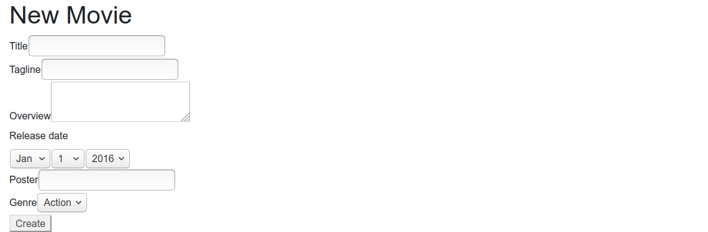
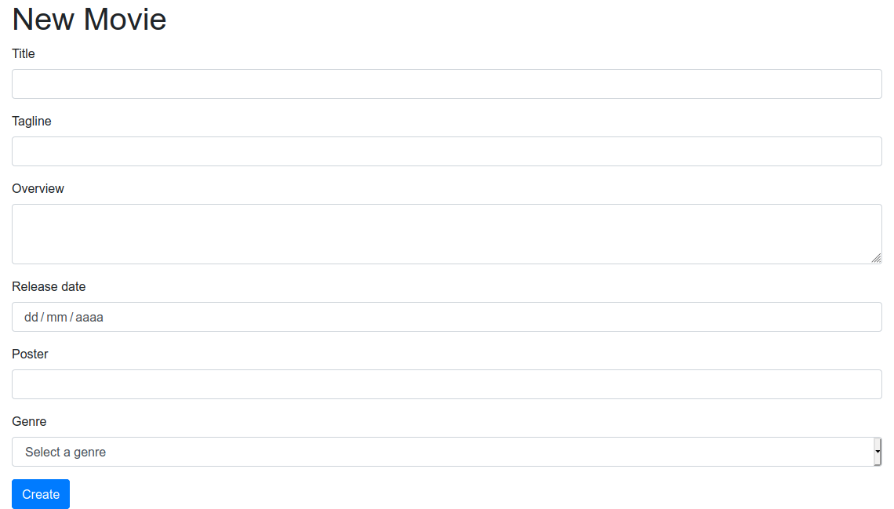

Generació de formularis i validació de dades
Generació de formularis
Fins a aquesta sessió hem après alguns conceptes útils de Symfony i alguns dels seus bundles més destacats, com per exemple la generació de vistes amb el motor de plantilles Twig, el desenvolupament de serveis, o la comunicació amb la base de dades a través de l'ORM Doctrine. Hem fet alguns controladors d'exemple per a cercar dades, o per a inserir. Però, en aquest últim cas, al no disposar encara d'un mecanisme perquè s'envien dades d'inserció des del client, hem optat ara com ara per inserir unes dades prefixades, és a dir, una publicació amb unes dades ja predefinides en el codi.
En aquesta sessió veurem de quina forma es poden definir formularis en Symfony associats a una determinada entitat, perquè el que s'envie en el formulari s'associe a un objecte d'aquesta entitat, i perquè puguem precarregar el formulari amb les dades d'una entitat ja existent, amb la finalitat de poder-los modificar.
Creació del formulari en el controlador
Els formularis poden crear-se fàcilment des de qualsevol controlador.
N'hi ha prou que creem o obtinguem l'objecte associat al formulari
(per exemple, una publicació), i carreguem un formulari amb ell. En el nostre blog, crearem un nou controlador que
responga a la URI /posts/new, que cree una publicació buida i la mostre al
formulari.
namespace App\Controller;
...
use Symfony\Component\Form\Extension\Core\Type\TextType;
use Symfony\Component\Form\Extension\Core\Type\SubmitType;
class MovieController extends AbstractController
{
...
/**
* @Route("/posts/new", name="app_posts_create")
*/
public function new()
{
$post = new Post();
$form = $this->createFormBuilder($post)
->add('title', TextType::class)
->add('slug', TextType::class)
->add('summary', TextareaType::class)
->add('content', TextareaType::class)
->add('publishedAt', DateType::class)
->add('create', SubmitType::class, array('label' => 'Create'))
->getForm();
return $this->render('post_create.html.twig', array(
'form' => $form->createView()));
}
...
En cada camp especifiquem també de quin tipus és. En el nostre cas, hem
definit tres quadres de text (TextType) per al títol, l'eslogan i el poster,
un camp de data (DateType) per a la data de l'estrena, un camp (TextareaType) per
a la sinopsi i un botó de submit (SubmitType) per a poder enviar el formulari. Podeu
consultar en Form Types Reference
un llistat més detallat dels tipus de camps que tenim
disponibles. Alguns que poden resultar-nos interessants són:
TextType(quadres de text d'una sola línia, com l'exemple anterior)TextareaType(quadres de text de diverses línies)EmailType(quadres de text de tipus email)IntegerType(quadres de text per a nombres enters)NumberType(quadres de text per a nombres en general)PasswordType(quadres emmascarats per a passwords)EntityType(desplegables per a triar valors vinculats a una altra entitat)DateType(per a dates)CheckboxType(per a checkboxes)RadioType(per a botons de radi o radi buttons)HiddenType(per a controls ocults)- ... etc.
Etiquetes personalitzades
Com podem veure per al cas del botó de submit, podem especificar un
tercer paràmetre en el mètode add que és un array de propietats del
control en qüestió. Una d'elles és la propietat label, que ens permet
especificar quin text tindrà associat el control. Per defecte, s'associa
el nom de l'atribut corresponent en l'entitat, però podem canviar-ho
per un text personalitzat. Per a l'imail, per exemple, podríem posar:
->add('email', EmailType::class, array('label' => 'Correu
electrònic'))
Millorant el nostre formulari
Aprofitant la varietat de tipus de camps que ofereix Symfony, millorarem una mica el nostre formulari:
- Per a l'
authorque afegírem en la sessió de Doctrine sobre relacions, podem emprar unEntityTypeque prenga les seues dades de l'entitatUser.
Amb açò, el formulari quedaria així:
->add('author', EntityType::class, ['class' =>
User::class, 'choice_label' => 'username']) ...
Renderitzant el formulari
El codi del controlador anterior acaba renderitzant una vista cridada
post_create.html.twig que, ara com ara, no existeix. En aquesta vista haurem de
renderitzar el formulari. Podria quedar-se així:
{% extends 'base.html.twig' %}
{% block title %}Publicació{% endblock %}
{% block body %}
<h1>Nova publicació</h1>
{{ form_start(form) }}
{{ form_widget(form) }}
{{ form_end(form) }}
{% endblock %}
Les tres línies sota l'encapçalat h1`` són les responsables de
la renderització del formulari, a partir del paràmetreform` que
li passem des del controlador.
Si ara accedim a http://blog-site/posts/new, veurem el
formulari:

Emplenant els camps del formulari
Tornem al nostre nou controlador. Si construïm un objecte farcit amb dades, veurem cada dada en el seu camp associat:
public function new()
{
$post = new Post();
$post->setTitle("Groundhog Day");
$post->setSlug("groundhog-day");
$post->setPublishedAt(new \DateTime(""));
$form = $this->createFormBuilder($post)
...
Enviament de formularis
Parlem ara sobre com enviar el formulari. Per defecte, si no s'indica
res, el formulari s'envia per POST a la mateixa URI que el genera (en
el nostre cas, a posts/new. De fet, si intentem enviar el formulari
en aquest moment, amb les dades que siguen, es tornarà a carregar la
vista del formulari, però no haurem inserit res.
Per a gestionar l'enviament d'aquestes dades, cal fer algunes modificacions sobre el nostre controlador:
- En primer lloc, el controlador rebrà un objecte
Request, que contindrà les dades del formulari enviat (en el cas que s'haja enviat) - En segon lloc, dins del codi del controlador, hem de processar eixes dades (si n'hi ha), validar-les (açò ho veurem a continuació) i si són vàlides, realitzar la corresponent inserció o modificació.
- Finalment, podem redirigir a una altra ruta en cas d'èxit, o tornar a renderitzar el formulari en cas d'error, o en cas que no s'haja enviat (per exemple, quan carreguem el formulari per a emplenar-ho).
Unint aquestes premisses, el nostre controlador quedaria així:
# src/Controller/DefaultController.php
/**
* @Route("/posts/new", name="app_posts_new")
*/
public function create(Request $request)
{
...
$form->handleRequest($request);
if ($form->isSubmitted() && $form->isValid()) {
$post = $form->getData();
$entityManager = $this->getDoctrine()->getManager();
$entityManager->persist($post;
$entityManager->flush();
return $this->redirectToRoute('app_index');
}
return $this->render('posts_create.html.twig', array(
'form' => $form->createView()));
...
}
Modificació de dades
El que hem fet en l'exemple anterior és una inserció d'una nova
publicació, però... com seria fer una modificació de publicació existent?
El funcionament seria molt similar, però amb un xicotet canvi: la ruta del
controlador rebrà com a paràmetre l'identificador de la publicació a modificar,
i a partir d'ací, cercaríem la publicació i la carregaríem en el formulari,
incloent-hi el seu id en un camp ocult. D'aquesta forma, en fer persist
es modificaria la publicació seleccionada.
Podem provar-ho amb aquest controlador:
/**
* @Route("/posts/{id}/edit", name="movies_edit")
*/
public function edit(int $id, Request $request)
{
$movieRepository = $this->getDoctrine()->getRepository(Movie::class);
$movie = $movieRepository->find($id);
$form = $this->createFormBuilder($movie)
->add('id', HiddenType::class)
->add('title', TextType::class)
->add('tagline', TextType::class)
->add('overview', TextareaType::class)
->add('releaseDate', DateType::class,
['widget' => "single_text"]
)
->add('poster', TextType::class)
->add('genre', EntityType::class,
['class' => Genre::class,
'choice_label' => 'name',
'placeholder' => 'Select a genre',
]
)
->add('create', SubmitType::class, array('label' => 'Create'))
->getForm();
$form->handleRequest($request);
...
}
Veiem que el codi és molt semblant al de la inserció, excepte pel paràmetre
id que rep el controlador amb l'identificador de la publicació a editar, la
cerca inicial d'aquesta publicació, i el camp ocult id en el formulari.
Symfony autowiring
Recorda que Symfony ens proporciona la possibilitat de fer autowiring de
les entitats, afegint-les com a paràmetres en lloc del seu id.
Recorda afegir el corresponent use al principi perquè reconega la classe
HiddenType.
Ara, si accedim a blog-site/posts/1/edit, per exemple
(suposant que tinguem una publicació amb 1 com identificador), es
carregarà el formulari amb les seues dades, i en enviar-lo, es
modificaran els camps que hàgem canviat, i es carregarà la pàgina
d'inici.
Validació de formularis
Ara que ja sabem crear, enviar i gestionar formularis, vegem un últim
pas, que seria la validació de dades d'aquests formularis prèvia al seu
enviament. En el cas de Symfony, la validació no s'aplica al formulari,
sinó a l'entitat subjacent (és a dir, a la classe Movie, en el nostre cas).
Per tant, la validació l'obtindrem afegint una sèrie de restriccions o
comprovacions a aquestes classes. Per exemple, per a indicar que el títol,
el poster i la data de l'estrena no poden estar buits, afegim aquestes
anotacions en els atributs de la classe Movie:
#src/Entity/Movie.php
...
use Symfony\Component\Validator\Constraints as Assert;
/**
* @ORM\Entity(repositoryClass=MovieRepository::class)
*/
class Movie
{ ...
/**
* @ORM\Column(type="string", length=100)
* @Assert\NotNull
*/
private $title;
/**
* @ORM\Column(type="string", length=255, nullable=true)
*/
private $tagline;
/**
* @ORM\Column(type="string", length=100)
* @Assert\NotNull
*/
private $poster;
/**
* @ORM\Column(type="date")
* @Assert\NotNull
*/
private $releaseDate;
...
novalidate:
# templates/movies-create.html.twig
{{ form_start(form, {attr: {'novalidate': 'novalidate'}}) }}
Aquestes funcions de validació admeten una sèrie de paràmetres útils. Un
dels més útils és `message`, que s'empra per a determinar el missatge
d'error que mostrar a l'usuari en cas que la dada no siga vàlida. Per
exemple, per al títol, podem especificar aquest missatge d'error:
```php
/**
* @ORM\Column(type="string", length=100)
* @Assert\NotNull(message="The title is mandatory")
*/
private $title;
Podeu trobar més informació sobre quines assercions es poden usar per a validar dades en la documentació oficial de Symfony: Validation.
Altres consideracions finals
Per a finalitzar aquesta sessió, vegem algunes qüestions que hem deixat en el tinter i no deixen de ser igualment importants.
Creació de classes per a formularis
Fins ara, hem definit els formularis directament en els controladors
afectats. Així, en la nostra aplicació, hem definit un
formulari per a la ruta /posts/new i un altre (el mateix,
pràcticament) per a la ruta /posts/{id}/edit.
El recomanat, segons la documentació de Symfony, és no situar els formularis directament en els controladors, sinó crear-los en una classe a banda. D'aquesta forma, podríem reutilitzar els formularis en diversos controladors, i no repetir codi innecessàriament.
Vegem com quedaria aquesta classe per al formulari d'inserció i edició
de publicacions. Com sempre, podem crear el formulari on vulguem, però per
unificar criteris, i seguint els exemples de la documentació de Symfony,
crearem una carpeta Form en la nostra carpeta src, i posarem dins els
formularis. En el nostre cas, crearem una classe anomenada PostType,
que heretarà d'una classe base genèrica de Symfony cridada
AbstractType. Dins, definim el mètode buildForm que s'encarregarà de
crear el formulari, com féiem abans en el mètode nou o a editar:
# src/Form/PostType.php
public function buildForm(FormBuilderInterface $builder, array $options)
{
$builder
->add('title', TextType::class)
->add('slug', TextType::class)
->add('summary', TextareaType::class)
->add('content', TextareaType::class)
->add('publishedAt', DateType::class,
['widget' => "single_text"]
)
->add('author', EntityType::class,
['class' => User::class,
'choice_label' => 'username',
'placeholder' => 'Select a user',
]
)
->add('create', SubmitType::class, array('label' => 'Create'));
}
A més caldrà crear el mètode configureOptions:
public function configureOptions(OptionsResolver $resolver)
{
$resolver->setDefaults([
'data_class' => Post::class,
]);
}
# src/Controller/MovieController.php
public function create(Request $request)
{
$post = new Post();
$form = $this->createForm(PostType::class, $post);
$form->handleRequest($request);
if ($form->isSubmitted() && $form->isValid()) {
$entityManager = $this->getDoctrine()->getManager();
$entityManager->persist($post);
$entityManager->flush();
return $this->redirectToRoute('app_index');
}
return $this->render('posts_create.html.twig', array(
'form' => $form));
}
Afegint estil als formularis
Els formularis que hem generat en aquesta sessió són molt funcionals, però poc vistosos, ja que manquen d'estils CSS propis. Si volguérem afegir CSS a aquests formularis, tenim diverses opcions.
Una opció rudimentària consisteix a afegir classes (atribut class) als
controls del formulari per a donar estils personalitzats. Després, en el
nostre CSS caldria indicar l'estil per a la classe en qüestió.
A més, Symfony ofereix diversos temes (themes) que podem aplicar als formularis (i webs en general) per a donar-los una aparença general basada en algun framework conegut, com Bootstrap o Foundation. Si volem optar per l'aparença de Bootstrap, hem de fer el següent:
-
Incloure la fulla d'estils CSS i l'arxiu Javascript de Bootstrap en les nostres plantilles. Una pràctica habitual és fer-ho en la plantilla
base.html.twigperquè qualsevol que herete d'ella adopte aquest estil. Per a açò, en la seccióstylesheetshem d'afegir el codi HTML que hi ha en la documentació oficial de Bootstrap per a incloure la seua fulla d'estil, i en la secció javascripts els enllaços a les diferents llibreries que s'indiquen en la documentació de Bootstrap també. -
Editar l'arxiu de configuració
config/packages/twig.yamli indicar que els formularis usaran el tema de Bootstrap (en aquest cas, Bootstrap 5):twig: ... form_themes: ['bootstrap_5_layout.html.twig']
Amb aquests dos canvis, l'aparença del nostre formulari de pel·lícules queda així:

Hi ha altres alternatives, com per exemple no indicar aquesta
configuració general en config/packages/twig.yaml i indicar formulari
per formulari el tema que es vol usar.
{% form_theme form 'bootstrap_5_layout.html.twig' %}
{{ form_start(form) }}
...
Existeixen també altres temes disponibles per a utilitzar. I també és possible crear els teus propis. Podeu consultar més informació en Symfony built-in form themes
Afegir estils per a les validacions
En el cas de les validacions de dades del formulari, també podem definir
estils perquè els missatges que d'error que es mostren (paràmetre
message o similars en les anotacions de l'entitat) tinguen un estil
determinat. Açò s'aconsegueix fàcilment triant algun dels temes
predefinits de Symfony.
Personalització dels formularis
Twig permet controlar amb major detall la renderització dels formularis. En lloc d'usar
la funció form podem emprar, per exemple, form_row(entitat.atribut) que permet renderitzar una propietat concreta.
Per obtenir una informació més detallada és molt recomanable que reviseu: How to Customize Form Rendering.